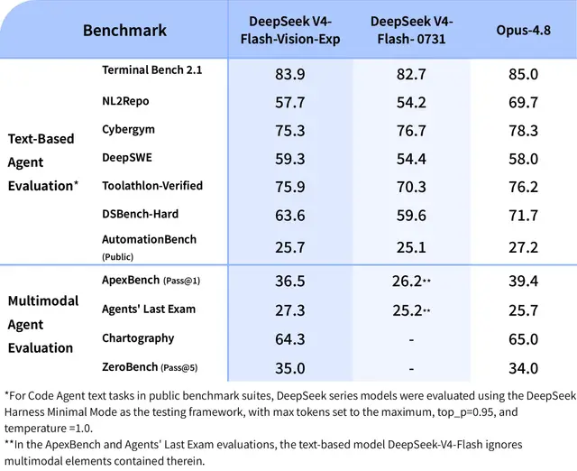

#deep-seek
DeepSeek、視覚対応「V4-Flash-Vision-Exp」をAPI公開

DeepSeekは、実験的なマルチモーダルモデル「DeepSeek-V4-Flash-Vision-Exp」をAPI Platformで公開しました。テキスト性能を維持しながら画像理解を統合し、ブラウザ操作やGUI解析など、視覚情報を扱うAIエージェント用途の拡大を狙います。
記事で取り上げている点
- テキスト性能を維持したまま視覚能力を追加
- APIは主要3形式に対応
- Files APIでAgentの画像再利用を効率化
- マルチモーダルAgent競争が次の焦点に
- 今後の展望
一次情報（出典） twitter.com